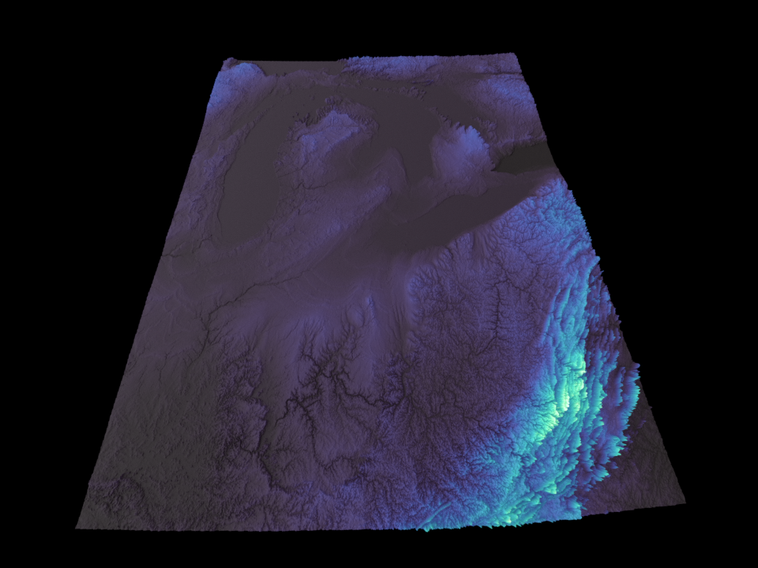
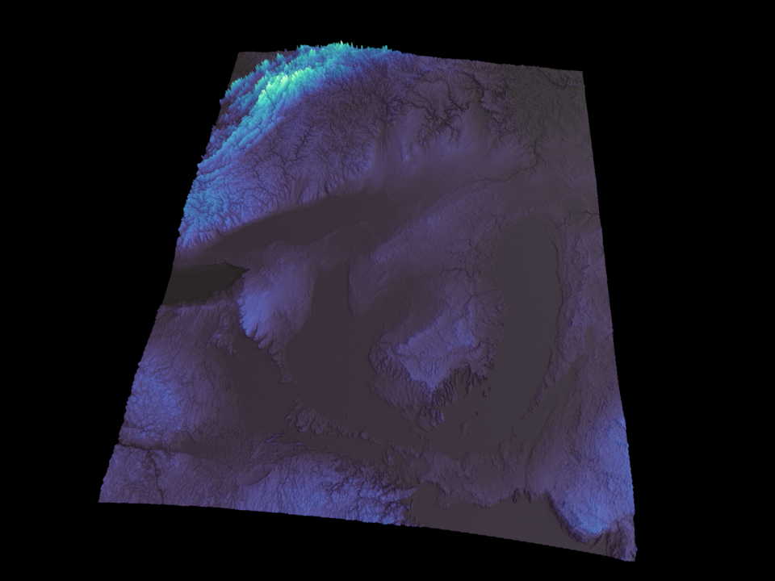
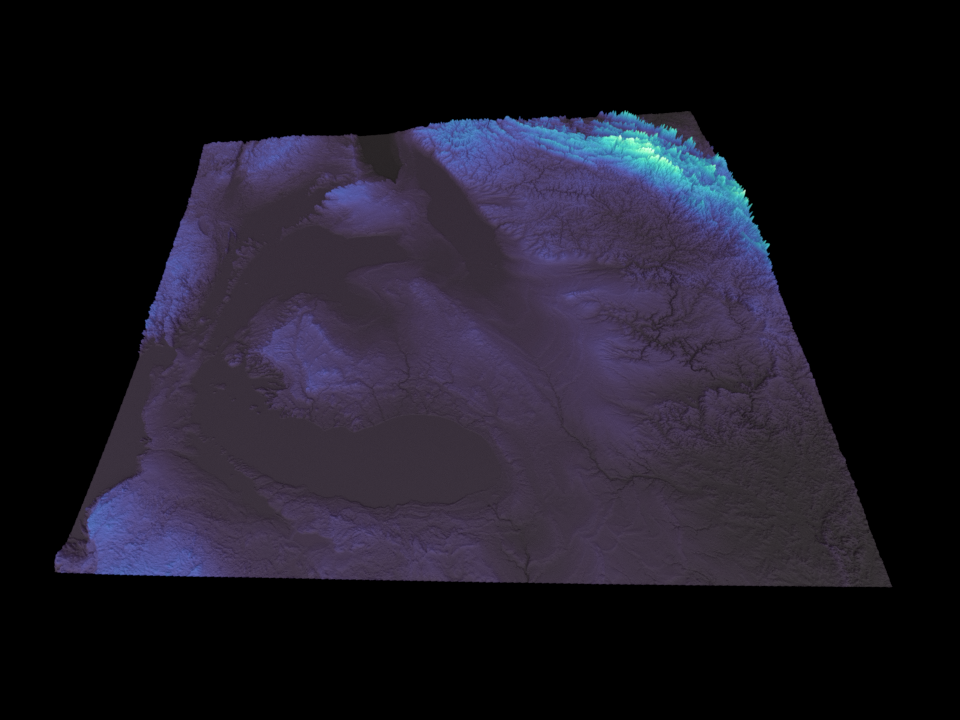

Examples Gallery¶
Real-world examples demonstrating the power and simplicity of Terrain Maker.
Detroit Elevation Visualization¶
A complete example showing how to create stunning 3D terrain visualizations from real SRTM elevation data with just a few lines of Python.
The Result¶

Professional-quality 3D terrain visualization of Detroit metro area - rendered with Blender from real SRTM elevation data with water body detection enabled
Multiple Views with Intelligent Camera Positioning¶
The example demonstrates the power of position_camera_relative() by generating professional renders from different camera angles - each with optimal framing for its view direction:
| North View | East View |
|---|---|
| (looking south) | (looking west) |
|  |  |
| West View | Overhead View |
|---|---|
| (looking east) | (90° down, zero rotation) |
|  |  |
Generate these views yourself:
npm run py:example:detroit-north # or any of: south, east, west, above
Each view is automatically framed with intelligent target offset adjustments. No manual coordinate calculations needed!
What This Example Shows¶
✓ Loading Real Geographic Data: Automatically loads and merges SRTM HGT tiles ✓ Intelligent Mesh Optimization: Configure mesh density by target vertex count, not magic numbers ✓ Coordinate Transformation: Automatic reprojection from WGS84 to UTM coordinates ✓ Water Body Detection: Automatic identification of water bodies using slope-based analysis ✓ Intuitive Camera Control: Position cameras using cardinal directions (north, south, above, etc) ✓ Beautiful Visualization: Professional Blender rendering with color mapping and water shader
The Code¶
# 1. Load elevation data
dem_data, transform = load_dem_files(SRTM_TILES_DIR, pattern='*.hgt')
terrain = Terrain(dem_data, transform)
# 2. Configure mesh for target vertices (intelligent downsampling)
terrain.configure_for_target_vertices(target_vertices=1_000_000)
# 3. Apply geographic transforms
terrain.transforms.append(reproject_raster('EPSG:4326', 'EPSG:32617'))
terrain.transforms.append(flip_raster(axis='horizontal'))
terrain.transforms.append(scale_elevation(scale_factor=0.0001))
terrain.apply_transforms()
# 4. Set up beautiful Mako color mapping
terrain.set_color_mapping(
lambda dem: elevation_colormap(dem, cmap_name='mako'),
source_layers=['dem']
)
# 5. Create mesh with water detection and render
mesh = terrain.create_mesh(
scale_factor=100.0,
height_scale=4.0,
detect_water=True, # Enable water body detection
water_slope_threshold=0.1 # Flat areas (slope < 0.1) are water
)
camera = position_camera_relative(mesh, direction='south', distance=1.5)
render_scene_to_file(output_path="detroit.png", width=960, height=720)
Key Features in Action¶
Intelligent Downsampling¶
Instead of guessing downsampling factors, just tell Terrain Maker how many vertices you want:
terrain.configure_for_target_vertices(1_000_000) # Automatically calculates optimal zoom
Cardinal Direction Camera Positioning¶
No more confusing coordinate calculations. Position your camera intuitively with intelligent view-specific targeting:
camera = position_camera_relative(
mesh_obj,
direction='south', # Can be: north, south, east, west, northeast, etc.
distance=1.5, # Multiplier of mesh diagonal
elevation=0.5, # Height above center
look_at=(0, -1.5, 0), # View-specific target offset (auto-calculated)
)
What makes this powerful: - Each cardinal direction has intelligent target offset adjustments - North: targets (0, 2, 0) - offsets north for perfect framing - South: targets (0, -1.5, 0) - offsets south for perfect framing - East/West: adjust X axis similarly for optimal perspective - The function automatically calculates rotation, distance, and elevation - Overhead view uses zero rotation to eliminate gimbal lock artifacts
This eliminates trial-and-error camera positioning entirely!
Geographic Coordinate Handling¶
Automatic reprojection and proper coordinate system handling:
terrain.transforms.append(reproject_raster(
src_crs='EPSG:4326', # WGS84 (from SRTM data)
dst_crs='EPSG:32617', # UTM Zone 17N (Detroit area)
num_threads=4
))
Water Body Detection & Blue Coloring¶
Automatic water body identification using slope-based analysis with direct blue coloring:
# Create mesh with water detection enabled
# Water pixels are automatically colored blue, land shows elevation colors
mesh = terrain.create_mesh(
scale_factor=100.0,
height_scale=4.0,
detect_water=True, # Enable water body detection
water_slope_threshold=0.1 # Flat areas (slope < 0.1) are water
)
How it works:
Detection Phase: - Uses Horn's method to compute terrain slope from the downsampled elevation data - Identifies pixels with slope below threshold as potential water bodies - Applies morphological operations to smooth water boundaries and fill gaps
Coloring Phase: - Directly colors detected water pixels blue (RGB: 26, 102, 204) - Land pixels retain their elevation-based Mako colormap colors - Results in clear visual distinction between water and terrain - Water is colored during mesh creation, no shader configuration needed
Customization:
- Adjust water_slope_threshold to find more or fewer water bodies (higher = more sensitive)
- The default threshold of 0.1 works well for most real-world elevation data
- For noisy terrain, increase threshold (e.g., 0.15-0.2); for detailed water features, decrease it (e.g., 0.05-0.08)
Running This Example¶
Basic Render¶
python examples/detroit_elevation_real.py
This will:
1. Load SRTM elevation tiles from data/dem/detroit/
2. Process the data with intelligent downsampling
3. Generate a ~1.4 million vertex Blender mesh
4. Render a publication-quality PNG with blue water coloring from the south
5. Save a Blender file for further editing
Generate Multiple Views¶
The example supports command-line arguments to easily create renders from different camera angles:
# Quick commands for each cardinal direction
npm run py:example:detroit-north # North view
npm run py:example:detroit-south # South view
npm run py:example:detroit-east # East view
npm run py:example:detroit-west # West view
npm run py:example:detroit-above # Overhead bird's-eye view
Each renders the same terrain from a different perspective with intelligent view-specific framing. Perfect for creating comparison sets or presentations!
Example Output¶
When you run the example, you'll see output like this:
======================================================================
Detroit Real Elevation Visualization
======================================================================
✓ Blender scene cleared
[1/6] Loading SRTM tiles...
Opening DEM files: 100%|██████████| 110/110 [00:00<00:00, 1530.60it/s, opened=110]
[2/6] Initializing Terrain object...
Terrain initialized
DEM shape: (36001, 39601)
[3/6] Applying transforms...
Original DEM shape: (36001, 39601)
Configured for 1,382,400 target vertices
Calculated zoom_factor: 0.031139
Downsampled DEM shape: (1326, 1137)
Actual vertices: 1,507,662
Transforms applied successfully
[4/6] Setting up color mapping...
Color mapping configured (Mako colormap)
[5/6] Creating Blender mesh...
✓ Mesh created successfully!
Vertices: 1370951
Polygons: 1368731
[6/6] Setting up camera and rendering to PNG...
Camera: South-facing cardinal view
Direction: south, distance: 1.5x, elevation: 0.5x
Type: Orthographic
Samples: 32
Rendering...
✓ Rendered successfully!
File: detroit_elevation_real.png
Size: 2.0 MB
======================================================================
Detroit Real Elevation Visualization Complete!
======================================================================
Summary:
✓ Loaded and merged all SRTM tiles (full coverage)
✓ Configured downsampling to target vertex count intelligently
✓ Applied geographic coordinate reprojection (WGS84 → UTM)
✓ Created Terrain object with real elevation data
✓ Applied transforms (reproject + flip + scale)
✓ Configured beautiful Mako elevation-based color mapping
✓ Detected and applied water bodies (slope-based identification)
✓ Generated Blender mesh with 1370951 vertices
✓ Rendered to PNG: /path/to/detroit_elevation_real.png
That's it! Professional terrain visualization with water detection in just a few lines of Python!
The entire process takes about 30-40 seconds on modern hardware. You'll see progress bars for DEM loading and processing, with detailed logging of each transformation step.
Output Files¶
examples/detroit_elevation_south.png- Main example render (south view, 960×720, 2.1 MB)examples/detroit_elevation_{north,east,west,above}.png- Alternative viewsexamples/detroit_elevation_{view}.blend- Blender files for further editing
Why Terrain Maker Makes This Easy¶
Traditional terrain visualization typically requires: - Manual downsampling factor calculation - Complex coordinate reprojection setup - Blender scripting knowledge - Camera positioning through trial-and-error
With Terrain Maker, you get: - Automatic mesh optimization by target vertex count - Built-in geographic transforms with sensible defaults - Water body detection using slope-based analysis - Intuitive cardinal direction camera positioning - Professional Blender integration out of the box - Color mapping from elevation data in one line - Water shader rendering for realistic water visualization
Customization¶
Command-Line Camera Control¶
The example script accepts arguments to customize rendering without code changes:
# Change view direction
python examples/detroit_elevation_real.py --view east
# Adjust camera distance (closer/farther)
python examples/detroit_elevation_real.py --view north --distance 0.15
# Change elevation (higher/lower viewpoint)
python examples/detroit_elevation_real.py --view above --elevation 0.8
# Custom output filename
python examples/detroit_elevation_real.py --view west --output my_render.png
# Switch to orthographic projection
python examples/detroit_elevation_real.py --view north --camera-type ORTHO
In-Code Customization¶
# Change the colormap
elevation_colormap(dem, cmap_name='viridis') # Other options: turbo, plasma, etc.
# Adjust camera angle
position_camera_relative(mesh, direction='east', elevation=1.0)
# Configure rendering
setup_render_settings(samples=4096, use_denoising=True)
# Create a presentation set of all views
for view in ['north', 'south', 'east', 'west', 'above']:
position_camera_relative(mesh, direction=view)
render_scene_to_file(output_path=f"detroit_{view}.png")
Generating Multiple Comparison Views¶
Create a full set of renders for comparison or publication:
# Generate all cardinal views at once
for view in north south east west above; do
npm run py:example:detroit-$view
done
This creates 5 renders showing the terrain from different perspectives, with consistent framing and optimal camera positioning for each angle.
Regenerating Example Images¶
When you update the example code or want to refresh the documentation images with the latest rendering, use these npm commands:
# Generate the main example image (south view - default)
npm run py:example:detroit-elevation
# Generate specific views
npm run py:example:detroit-south # South view (recommended for main image)
npm run py:example:detroit-north # North view
npm run py:example:detroit-east # East view
npm run py:example:detroit-west # West view
npm run py:example:detroit-above # Overhead view
# Generate all views at once
for view in south north east west above; do
npm run py:example:detroit-$view
done
Output locations:
- Main image: examples/detroit_elevation_south.png (recommended for documentation)
- View-specific: examples/detroit_elevation_{north,south,east,west,above}.png
- Blender files: examples/detroit_elevation_{view}.blend
Each render takes 30-40 seconds on modern hardware. The images are then automatically included in the documentation gallery when you run:
npm run docs:build
Want to try it yourself? See Quick Reference for API documentation and API Reference for detailed function signatures.